Winnand TKL - Build Journal
12/9/2025 - Created PCB Schematic
Time spent: 4.0h
The first thing I did was figure out the size I wanted. I decided on a Ten Key Less layout because that's what I use on my current keyboard. I then decided on a 6x17 matrix. Here is the initial routing, which I made by screenshotting a modified keyboard-layout-editor.com layout & drawing on it:
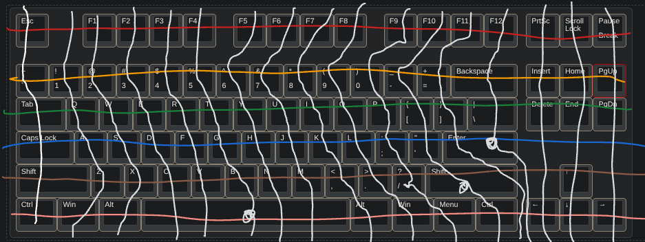
I then created a schematic in KiCAD following his guide. I imported the switch & diode symbols and profiles that he made, then arranged them to make the matrix. I took out some of the switch & diodes based on the drawing I made:
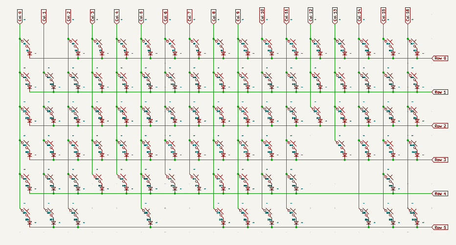
After the matrix, I needed to decide on which microcontroller to use. I initially wanted to use the Teensy 2.0, but it didn't have enough GPIO pins for the rotary encoder. After talking with my friend, I remembered that he had many Raspberry Pi Pico W boards sitting around. These boards barely have enough GPIO pins for the matrix and encoder, so I hope nothing goes wrong there.
Updated schematic file:
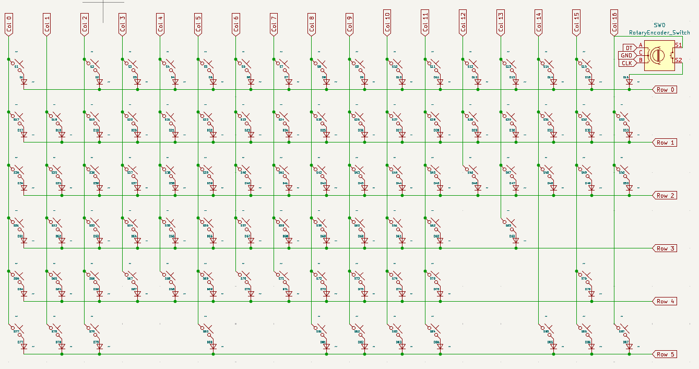
12/10/2025 - Started Routing the PCB
Time spent: 5.5h
I started Routing the PCB and placing the components. Joescotto's KiCAD library and tutorial helped a lot with making my standard TKL layout. A big problem I had was in using a KY-040 rotary encoder with the pushbutton. The problem was solved when I asked my question on the QMK Discord server, and solved even more when I read the Rotary Encoder part of the QMK documentation. I found out I needed to use the EC11 encoder, which is the same encoder but without the breakout board. On the PCB, I routed the switches and the diodes, as well as some of the traces connecting the switches to their respective diodes:
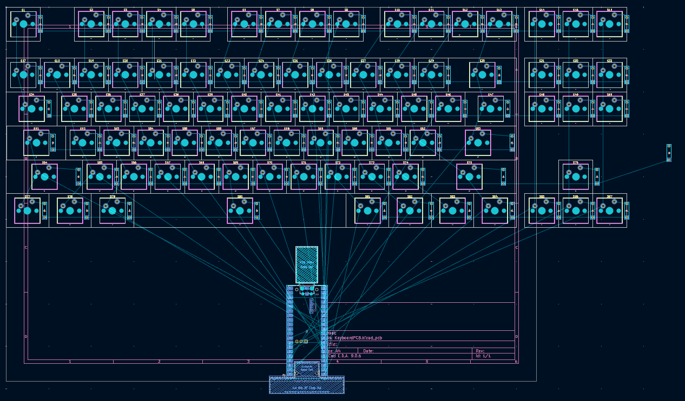
Next time, I will change the schematic to replace the top right key (Pause/Break) with the EC11 encoder and wire in the Raspberry Pi Pico.
12/12/2025 - Finished routing the PCB
Time spent: 7.0h
The first thing I did was remove the top right key and replace it with a rotary encoder. I then had to connect the switches to their diodes, then connect the switches' rows and columns together. This was the easy part. I then had to figure out how to get all the rows, columns, and encoder lines to my Raspberry Pi ("RasPi" from now on). To do this, I learned about Via's from the tutorial and used them a bunch. The main way I got the columns wired up was using 2 sets of lines. The lines were challenging since I wanted them to look good, so I spent some time figuring out a good way to get consistent spacing. Once I was finished with that, I added a ground plane, both to make the traces pop and give a ground plane to the RasPi and reduce EMI (I don't think this was needed, but I think it's good PCB practice). After that, I had to add holes. It took several tries until I was finally happy with it. After that, I was basically done. I then added the text on top. NOTE: Each of these steps involved rabbit holes and at least 1 failed attempt, which caused the time spent to be so high.
Here are the pics of the front and back of the PCB:
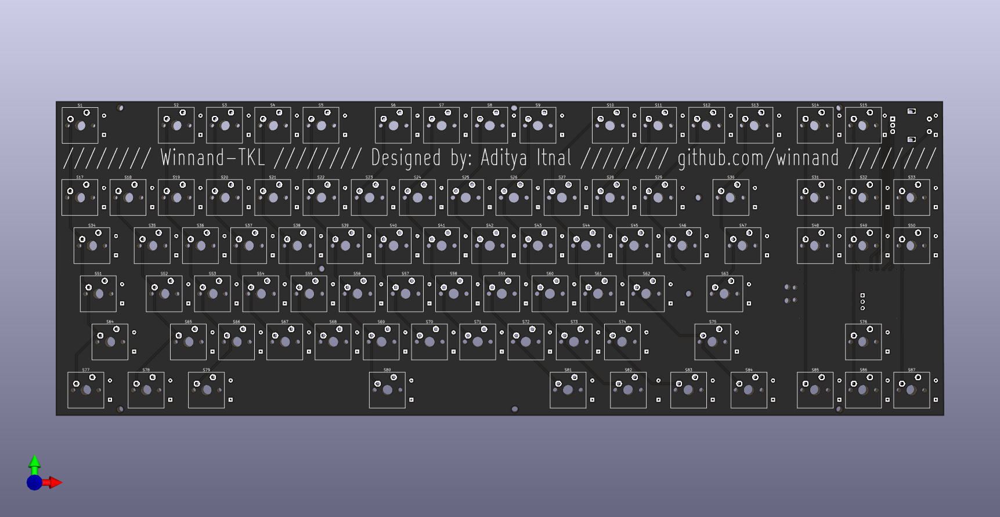
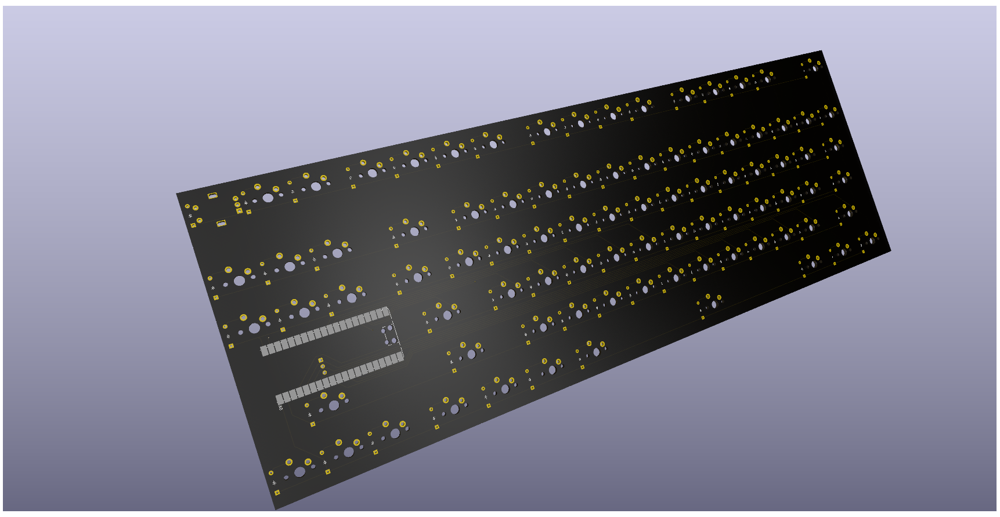
12/13/2025 - Compiled and Tested the Firmware
Time spent: 6.0h
Since I finished the PCB, the next thing I did was make the firmware. I decided to use QMK at first, so I followed their documentation and another one of Joe Scotto's guides. It took a few tries and at least 2 hrs to get my first firmware working. I tested it using a jumper cable and saw that the keyboard was sending keystrokes.
After that, I discovered Vial, which would allow me to customize the keymap without needing to recompile and reflash. That process took another 3 hours to figure out the changes I needed, debugging, and implementing the changes. This time, I found the Vial documentation a lot more up to date and helpful than a video, although I used (yet another) Joe Scotto tutorial.
Since I had the microcontroller and a rotary encoder (similar to the actual one), I could test out the encoder functions, which I set to Ctrl-Tab and Ctrl-Shift-Tab. The keyboard only switched the tabs after 7 or so clicks which was too many. I couldn't change that in Vial, so I recompiled and reflashed a few more times until I got to a resolution of 2. This is where I discovered the -j 10 flag when compiling my firmware. This made the compiler use 10 cores to greatly speed up the compilation. This easily made the compilation go 5-9x faster. After that, I realized I could have many more layers on the rp2040's flash/EEPROM. Again, I recompiled it to go from 4 layers to 8.
Here is a picture of the Vial base keymap/layer 0 of my winnand_tkl keyboard:
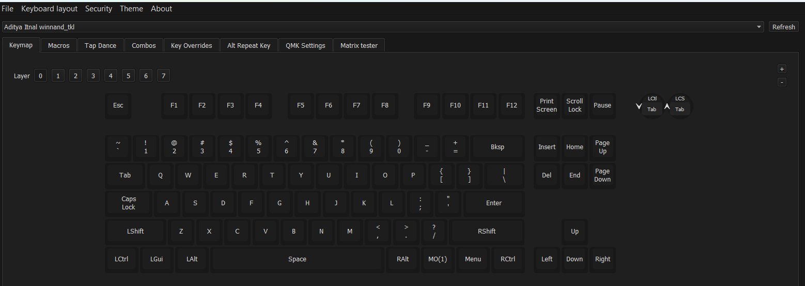
Something funny that happened was that I was trying to work on this in school, and, for context, I live in Texas where outside/non-school devices were banned, when I was trying to work on my first keyboard.json file. I tried to assign pins based on the keyboard schematic from KiCad, but I didn't have a picture of that. So I looked at this journal and found my entry when I designed the schematic. I figured out the picture I used was somewhat inaccurate since it had 3 keys that didn't exist. Of course, I updated it after completing this journal entry.
12/19/2025 - Completed the CAD for the Case and Plate
Time spent: 12.0h
To start, I imported the PCB into Fusion to get references for the dimensions and holes. I started to model around it until I realized that the PCB was not square. So, I had to go back to KiCad and resquare the PCB, then export it again. I also decided to move a hole, so I did that in KiCad and reexported it yet again.
After that, I had the edges of the PCB in a sketch. I wanted something to be unique about the case, so I decided to add an isogrid. In the images below, the repeating pattern is what that is. I started out by creating the seed sketch, with a few lines and circles. I made it parametric such that it would fit the bottom of the case exactly. This process took at least 6 tries. After that, I tried to duplicate it, but it started creating 1000s of sketch objects. I came to the conclusion that I had to make it a body instead. So I undid the pattern and extruded it.
Going off the initial isogrid body, I made a pattern, then used move and copy to duplicate it. That is when I
found the isogrid wasn't perfectly aligned horizontally, so I had to redo it yet again. So, I made it again
and reextruded and patterned it again. Afterwards, I used Move/Copy to duplicate it downwards a few times.
Then I merged all the bodies together. The isogrid was finally complete. This was easily the hardest, longest,
and most frustrating part of the whole CAD.
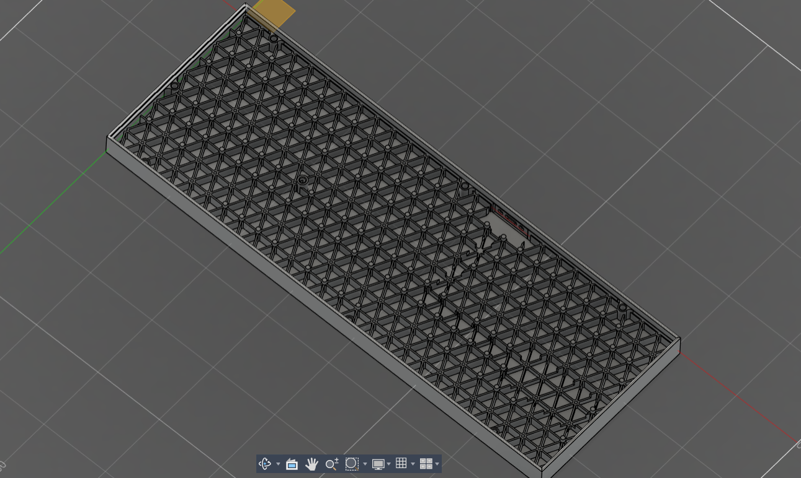
After the isogrid, I modeled the outside of the case, which was significantly easier. After that, I put in supports for the PCB wherever there wasn't a switch or diode in the way in pursuit of more stiffness. Then, I added clearance for the RasPi and the cable. For the cable, I designed a cutout in the case.
For the top plate, I first used this; http://builder.swillkb.com/ to get the cutout locations for the keys and stabilizers. I imported the DXF into Fusion and moved it around till it fit around the switches. I then extruded the plate to 1.6mm, a default thickness for a KB plate. I then made those bars seen in the following renders to both stiffen the plate and make sure it doesn't bend when pressed down. This creates a load path from the top of the plate to the PCB to the bottom of the case.
Finally, I cut them up so that they could be 3D printed. A small problem may be that the isogrid thickness is only 1mm but it is kind of tall, so it may fail. Originally, it was only 0.5mm thick, so I had to go back into my sketch to change that. After the slices, it was finally done.
Here are some renders I made:
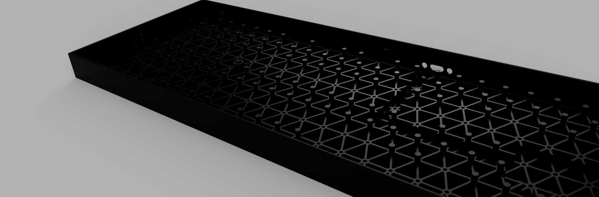
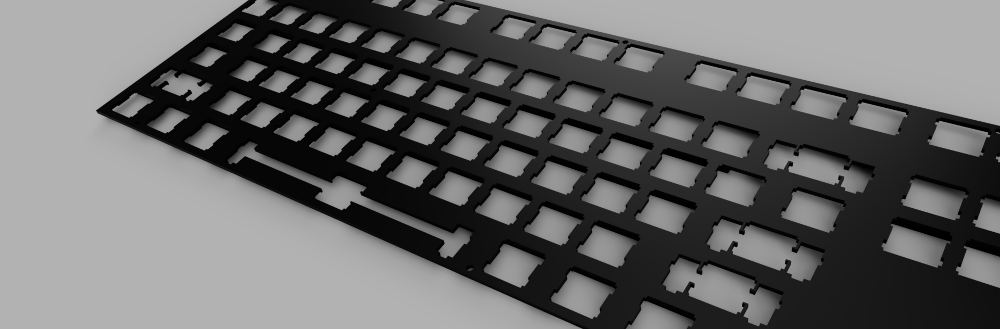
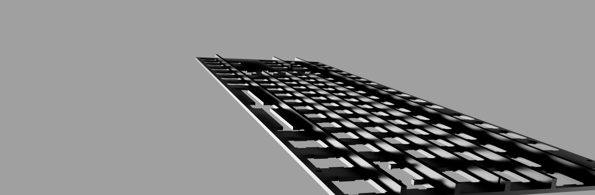
NOTE: This took so much time since I spread this out over a few days. Also, each step had around 3 or more attempts each. On top of that, Fusion takes time to model so many features.
1/6/2026 - Final Render
Time spent: 1.0h
To make the keycaps, I found a set online on a 3d print share site: https://www.thingiverse.com/thing:2178185. I moved around and duplicated the keycaps until they were over each switch and then rendered it.
Here is the final render:
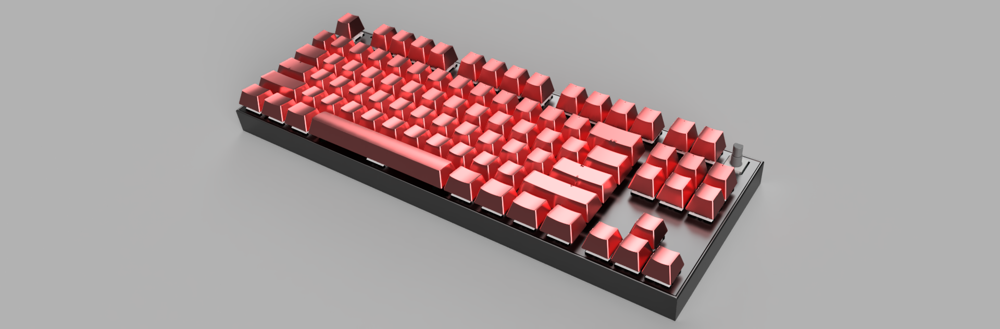